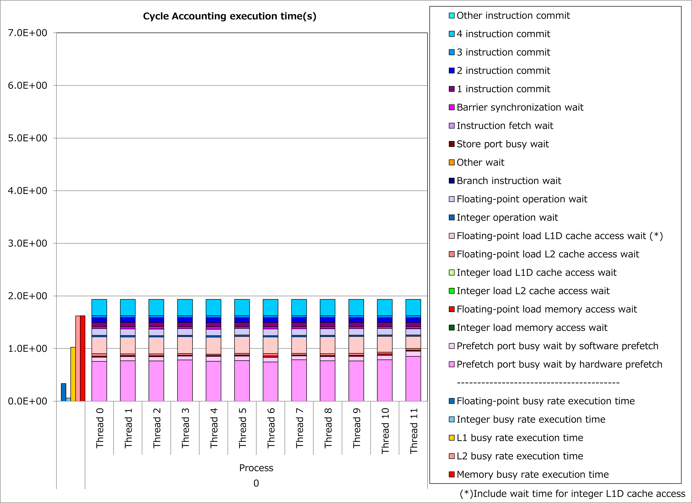
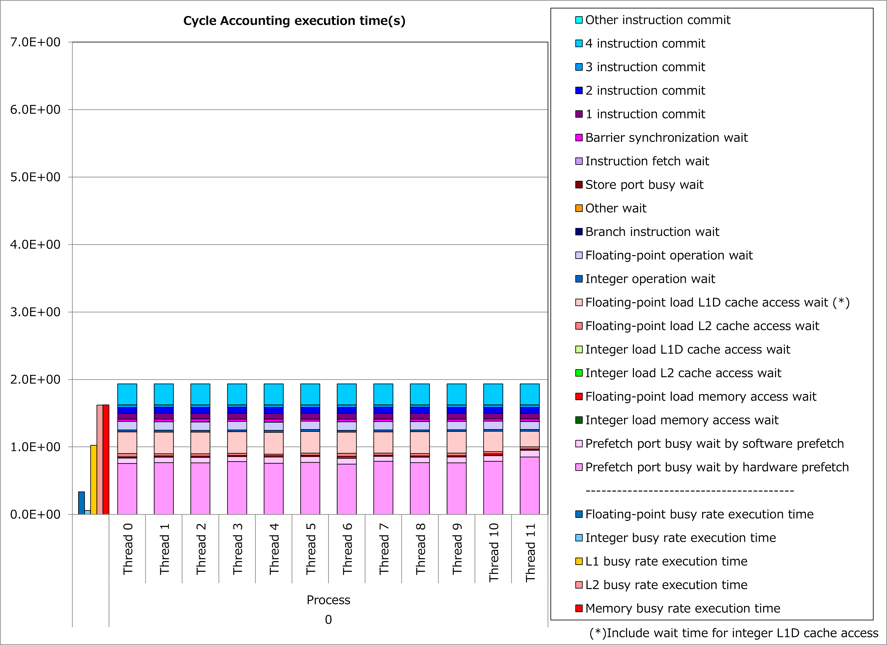

4.1. 非連続アクセス最内ループのフルアンローリング¶
4.1.1. 動機¶
富士通Fortran/C/C++コンパイラは最内ループをSIMD化します。 そのため、ループ内の配列アクセスにおいて1次元目(Fortran言語の場合)が最内ループのループ変数でない場合、配列アクセスが非連続的になり、プロセッサのキャッシュアクセス負荷が高くなります。
ここで、最内ループの繰り返し数が一定かつ少ない場合、当該ループをフルアンローリングすることによって、 SIMD化されるループのループ変数を配列アクセスの1次元目 にできるケースがあります。
その結果、配列アクセスが連続的になり、プロセッサのキャッシュアクセス負荷が軽減されて、実行時間を短縮できる可能性があります。
4.1.2. 適用例¶
A64FX向けチューニング技術検討会 で示されたコード例を用いて、性能改善の例を以下に示します。 この例では、配列Fのアクセスが非連続的であるdo変数IPのループに対して、fullunroll_pre_simdの最適化制御行を適用しています。
改善前¶
!$OMP PARALLEL DO PRIVATE(FBUF)
DO IG = 1, NG3
V1(IG) = 0.D0
V2(IG) = 0.D0
V3(IG) = 0.D0
V4(IG) = 0.D0
DO IP = 1, 15
FBUF = F(IG,IP)
V1(IG) = V1(IG) + FBUF
V2(IG) = V2(IG) + FBUF*CVEL(1,IP)
V3(IG) = V3(IG) + FBUF*CVEL(2,IP)
V4(IG) = V4(IG) + FBUF*CVEL(3,IP)
END DO
END DO
改善後¶
!$OMP PARALLEL DO PRIVATE(FBUF)
DO IG = 1, NG3
V1(IG) = 0.D0
V2(IG) = 0.D0
V3(IG) = 0.D0
V4(IG) = 0.D0
!OCL FULLUNROLL_PRE_SIMD
DO IP = 1, 15
FBUF = F(IG,IP)
V1(IG) = V1(IG) + FBUF
V2(IG) = V2(IG) + FBUF*CVEL(1,IP)
V3(IG) = V3(IG) + FBUF*CVEL(2,IP)
V4(IG) = V4(IG) + FBUF*CVEL(3,IP)
END DO
END DO
改善前および改善後コードのサイクルアカウンティング測定結果を下記グラフに示します。 なお、性能測定条件は以下のとおりです。
NG3 = 131 3
改善前(左のグラフ)に対して改善後(右のグラフ)の測定結果では、L1Dキャッシュビジー時間が半減、L1Dキャッシュアクセス待ち時間が激減し、実行時間が70%減ったことが分かります。
 

{kind=link}
4.1.3. 実例¶
A64FX向けチューニング技術検討会 にて、この種の事例が以下のとおり紹介されています。
4.1.4. 参考資料¶
注意: 上記ドキュメントの参照には スーパーコンピュータ「富岳」利用者ポータル のアクセス権が必要です。